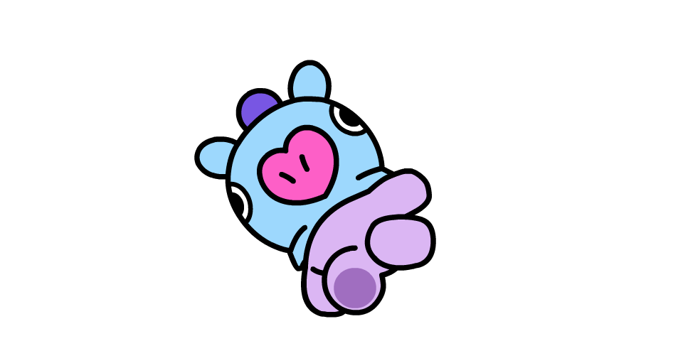

BT21
¿Qué es BT21?
El nombre BT21 es la combinación de BTS y del siglo 21 (en romano XXI). Son 8 personajes creados por BTS.
BT21 se creó de una colaboración de BTS con
Line Friends en 2017, siendo este proyecto como primer artista BTS.
Cuando aparecio una cuenta en Twitter llamada BT21 en la que tenia dibujos hechos a mado por cada uno de los integrantes de BTS,
luego de ser lanzado estos muñequitos,
ARMY tenia los ojos bien puestos en ellos con el fin de poder adivinar correctamente a quien te pertenecia cada uno.
La cual su canal de Youtube
se da a conocer a quien le corresponde cada uno de estos muñequitos (de manera individual) y el motivo detras de ello.
Estos muñequitos tienen nombres y estos son:
- KOYA: creado por RM
- RJ: creado por Jin
- SHOOKY: creado por Suga
- MANG: creado por J-hope
- CHIMMY: creado por Jimin
- TATA: creado por V
- COOKY: creado por JungKook
- VAN: creado por RM
Historia de BT21
Su historia comienzza cuando el Príncipe TATA, que viene del Planeta BT , ademas de que es demaciado curioso sueña con difundir el amor por toda la galaxia.
Decidiendo que el destino está en sus manos, TATA convoca al robot guardián VAN para prepararse para un viaje interestelar que por accidente lo lleva al planeta Tierra.
Poco después de su llegada, el Príncipe ve un cartel publicitario y llega a la conclución de que el también quiere llagar a ser igual de famoso y reconocido por lo cual va a llegar a convertirse en un UNIVERSTAR.
Al darse cuenta de que necesita reclutar a más miembros para su grupo de idols, se va en su busqueda de ellos. Pronto descubren a KOYA, RJ, SHOOKY, MANG, CHIMMY y COOKY
para convertirse en lo que se conocerá como la sensación más influyente de cultura pop que haya visto la galaxia. Llamandose BT21 .
Integrantes
-
KOYA

Brillante y multitalento, es el Koala pensador duerme con la mente llena de pensamientos, es celeste con ojos somnolientos y nariz morada.
#Talento #almohada #OrejasDesmontables
-
RJ

Es amable y educada, le encanta cocinar y comer, normalmente en ese orden y es la Alpaca amable. El es como en abrigo peludo y el alma compasiva que hace que todos se sientan como en casa.
#Saludos #Masticar #Apacible
-
SHOOKY

Le gusta hacer bromas sobre todo a sus amigos y sobre todo no le gusta la leche por ello es la Galleta deliciosa.
#Podercurativo #Amigos #Mini
-
MANG
El baile corre por sus venas. En cualquier lugar donde alla música, lo más probable es que este rompiendola con sus geniales pasos. Por ello es la pony bailarina enmascarada.
#Máscara #Misterioso #Mejorbaile
-
CHIMMY
Este cachorrito siempre se pone su capucha amarilla y en cualquier cosa que le atraiga o le llame la atención, pondrá todo su esfuerzo en hacerlo bien. Por ello es el Cachorro pasional.
#Pasión #Trabajoduro #CapuchaAmarilla
-
TATA
Es el Supercurioso, además de ser un principe del paneta BT. Es alguien que posee poderes sobrenaturales y tiene un cuerpo elastico que se puede extender grandes distancias.
#PlanetaBT #Supernatural #Transformación
-
COOKY

Es el Conejito rosa duro de roer, este conejito un amigo con el que siempre puedes contar, su mayor sueño es volverse más fuerte.
#Cejas #Desequilibrado #MúsculoImaginario
-
VAN

Es un robot sensato que aparentemente parece estar muy bien informado de de casi todo en la galaxia y es muy protector con BT21. Por eso es el Robot del espacio.
#Guardián #Robot #Vehículo
Enlaces de BT21

≛Si quieres comprar cosas de BT21 as click aquí te llevará a Amazon.